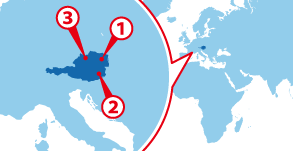

Vienna
Vienna Graz
Graz Linz
Linz
ワーホリ協定国一覧へ戻る

人気都市 BEST3
基本情報
| 首都 | Vienna |
|---|---|
| 言語 | German |
| 面積 | 83,870km2²（112位） |
| 人口 | 約8,364,000人（88位） |
| 通貨 | Euro (EUR) |
＊2014 年10 月時点の数値です
| 日本時間 | Vienna |
|---|---|
 1月1日 09:00am |
 1月1日 02:00am |
＊サマータイムの期間は時差が変動します
| 首都 | Vienna |
|---|---|
| 面積 | 83,870km2²（112位） |
| 人口 | 約8,364,000人（88位） |
| 言語 | German |
|---|---|
| 通貨 | Euro (EUR) |
＊2014 年10 月時点の数値です |
|
日本との時差
| 日本時間 | Vienna |
|---|---|
|
1月1日 09:00am |
1月1日 02:00am |
＊サマータイムの期間は時差が変動します
オーストリアってどんな国？
ヨーロッパのほぼ中央に位置するオーストリアは、8つの国に囲まれる内陸国です。国土は日本の約4分の１程ですが、そのほとんどがアルプスの美しく壮大な自然に包まれています。高原にはいくつもの湖があり、その大自然の美しさはヨーロッパでも随一と言われます。
オーストリアの公用語はドイツ語です。これは、元々オーストリアとドイツが同じ1つの国だった事が理由です。ただ、ドイツで使われているドイツ語とは若干の違いがあり、細かく分類すると「オーストリアドイツ語」として扱われます。
オーストリアは上記のように公用語がドイツ語であるため、ドイツ語留学の渡航先として人気があります。特にオーストリアは音楽分野に長けているので、留学しながら音楽を学びたい、音楽に触れあいたいと考えている人にオススメされます。
オーストリアは湿度の低い大陸性気候なので、夏は気温が高く、冬には激しく冷え込みます。渡航にオススメなのは4月から8月にかけて。天候的に暖かく過ごしやすい日が続き、春の音楽祭などのイベントも開催されます。だたし、日中と日没後では気温差が激しいので注意が必要です。
オーストリアの首都 ウィーンは「音楽の街」「楽都」と呼ばれるほどに音楽が盛んな街です。クラシックコンサートや音楽祭はもちろん、有名なウィーン少年合唱団や、国立オペラ座でのオペラも見所です。また、モーツァルト、シューベルト、ハイドンなど、数多くの有名作曲家を生み出した国でもあり、街の至る場所で彼らも足跡を辿ることができます。
オーストリアに点在する数多くの歴史ある劇場では、今でも世界最高峰のオペラやバレエ、コンサートが上映されています。1年を通して様々な演目が上映されるので、ワーキングホリデーや留学で滞在中にいくつの演目を見ることが試してみるのもいいかもしれません。
▼▼▼まずは無料セミナーへ！ワーキングホリデー＆留学の無料セミナーはこちら！▼▼▼